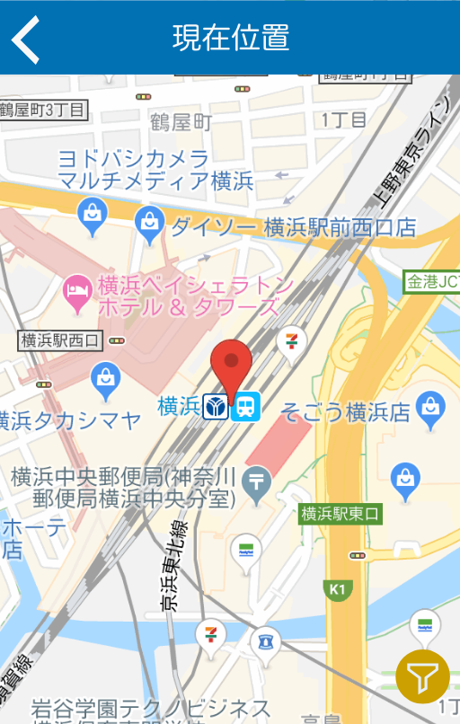
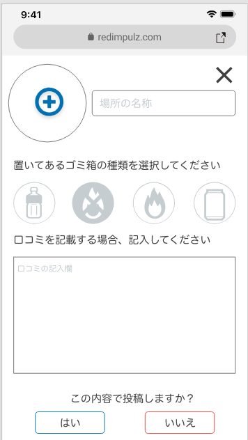
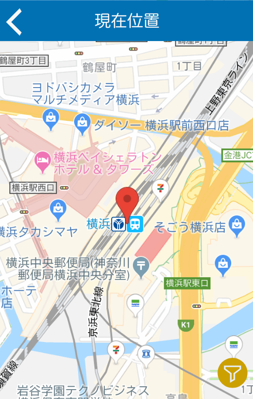
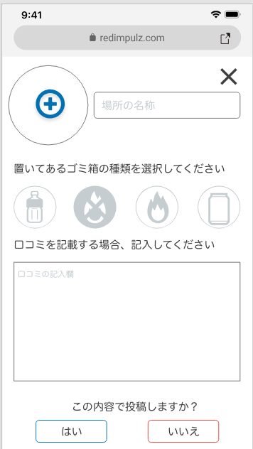

ゴミ箱ないとは言わせない
ゴミ箱位置検索サービス
現在地で探す
マニュアル
Search
探す
PoiMapは周辺地域や指定した地域にあるゴミ箱の位置を表示して案内します。 又、ゴミの種類によってフィルターをかけることもできるので、 捨てたいゴミの種類に応じて表示するゴミ箱を制限することもできます。
Add
追加
PoiMapはゴミ箱の位置を地図上に追加することもできるので、見つけたゴミ箱をユーザー同士で共有することができます。
ゴミ箱位置検索サービス

現在地で探す
マニュアル

PoiMapは周辺地域や指定した地域にあるゴミ箱の位置を表示して案内します。 又、ゴミの種類によってフィルターをかけることもできるので、 捨てたいゴミの種類に応じて表示するゴミ箱を制限することもできます。

PoiMapはゴミ箱の位置を地図上に追加することもできるので、見つけたゴミ箱をユーザー同士で共有することができます。